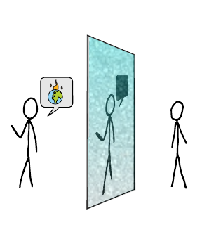

Different types of noise affect opinion dynamics in quite different ways: increase polarisation, promote agreement through compromise, but even promote more extreme consensus, given the right conditions. Noise is often overlooked or insufficiently dealt with in social dynamics models but it can be critical and surprising.
Full abstract of our paper:
Opinion dynamics are affected by cognitive biases and noise. While mathematical models have focused extensively on biases, we still know surprisingly little about how noise shapes opinion patterns. Here, we use an agent-based opinion dynamics model to investigate the interplay between confirmation bias---represented as bounded confidence---and different types of noise. After analysing where noise can enter social interaction, we propose a type of noise that has not been discussed so far, ambiguity noise. While previously considered types of noise acted on agents either before, after or independent of social interaction, ambiguity noise acts on communicated messages, assuming that socially transmitted opinions are inherently noisy. We find that noise can induce agreement when confirmation bias is moderate, but different types of noise require quite different conditions for this effect to occur. An application of our model to the climate change debate shows that at just the right mix of confirmation bias and ambiguity noise, opinions tend to converge to high levels of climate change concern. This result is not observed with the other types. Our findings highlight the importance of considering and distinguishing between the various types of noise and the unique role of ambiguity in opinion formation.
Full abstract of our opinion piece:
'Noisy' behaviour, belief updating, or decision-making is universally observed, yet typically treated superficially or not even accounted for at all by social simulation modellers. Here, we show how noise can affect model dynamics and outcomes, argue why injecting noise should become a central part of model analyses, and how it can help our understanding of (our mathematical models for) social behaviour. We formulate some general lessons from the literature around noise, and illustrate how considering a more complete taxonomy of different types of noise may lead to novel insights.